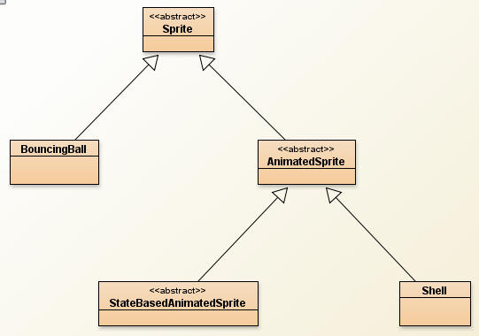
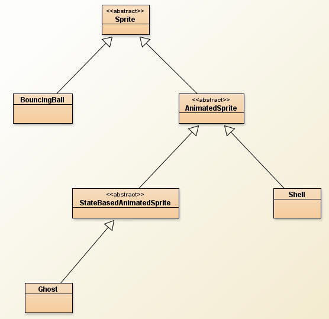
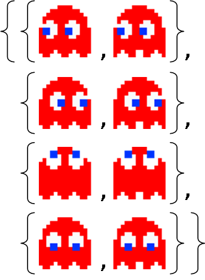
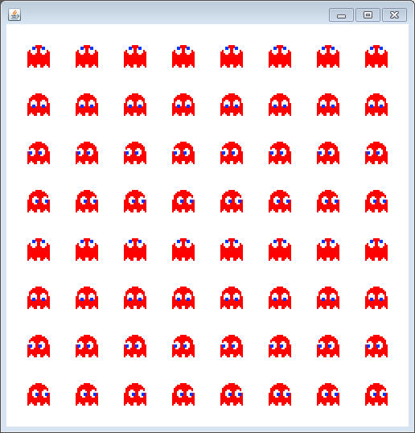
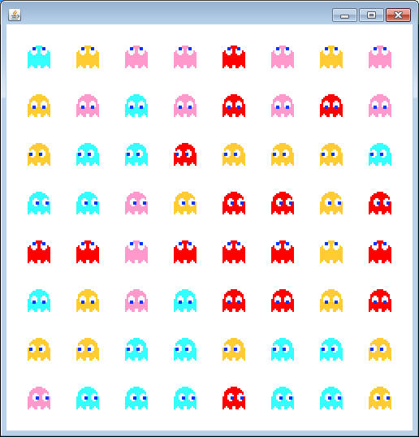
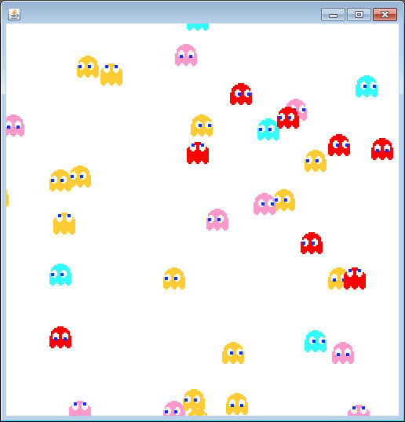
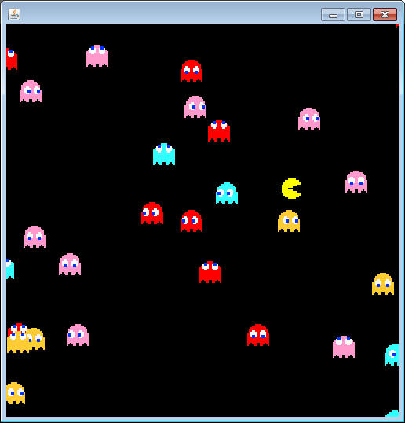

So far we've extended the Sprite class to create the AnimatedSprite class. It has a lot of instance fields and methods that help you create items on a screen with an x, y, width, height, velocity. The main augmentation of the AnimatedSprite class was that you can load an array of Pictures that the sprite can loop through to look like it's animated.
But sometimes a Sprite's animation is dependent on what the Sprite is currently doing. Each different state has a different Picture strip assosciated with it.
Create a class named StateBasedAnimatedSprite, which is a subclass of the AnimatedSprite class.
The idea behind the StateBasedAnimatedSprite class is that it will have many different Picture arrays. It will have a method that will use AnimatedSprite's setPictureStrip method to load a different Picture array every time the 'state' of the Sprite changes.
Instance Fields: Similar to how a Wanderer works, the StateBasedAnimatedSprite class should have an int as an instance field to represent the state of the Sprite. At this level we don't know what each int means. It will be up to the subclasses to decide.
Secondly, the StateBasedAnimatedSprite class should have a 2-Dimensional Picture array to hold all of the Picture strips that are needed for the Sprite. Remember that 2-D arrays are just arrays of arrays. At index 0, will be the array of Pictures that coincides with state 0, whatever that state may be.
Constructor: Create the usual 4 parameter constructor that takes in the x, y, width, and height. Start the state variable at 0. Again, the 2-D array of Pictures will remain null, so we'll have to make sure that we remember that when we extend this class.
Methods:
public void setStrips(Picture[][] strips)
This method takes in the 2-D array that has all of the images for the Sprite and should simply assign it to the instance field.
public int getState()
Simply returns the state
public void setState(int state)
This method has two parts to it. First it sets the state instance field to be the parameter, and secondly it calls the inherited setPictureStrip and passes in one of the rows of the 2D array. The index of that array is simply the state that was passed in. For example, if the state is changed to 3, then row 3 will be passed into the setPictureStrip method. This will cause a different set of Pictures to be cycled through.
At this level, the abstract processBoundary method is still not overridden, so declare the StateBasedAnimatedSprite to be abstract.
Ghost

Create a class named Ghost, which extends the StateBasedAnimatedSprite class.
The constructor for Ghost should take in a BoundingBox as a parameter. First use the super constructor to set the x, y, width, and height of the the Ghost to be 250,250,40, and 40 respectively, and then make sure that the BoundingBox is set as the instance field. We must also worry about the null Picture strips that need to be set.
Picture[][] strips = SpriteLoader.getBlinkyPics();
This code will allow you to access the following array. All you need to do is call the setStrips method so that it makes its way to the instance field. Notice that index 0 is left, 1 is right, etc...

Notice that each row of the array has a different direction assosciated with it. Again, similar to Wanderer, let's make some nice variables to represent each row:
public static final int UP = 0, DOWN = 1, LEFT = 2, RIGHT = 3;
These variables aren't fully necessary, but using them will make the code much easier to read.
Most of the other methods needed to get a running Ghost have been inherited. The only issue is that we haven't dealt with the abstract processBoundary method. It is impossible to compile Ghost without having this method, so override it and put no code in the body of the method. This is temporary and just for testing.
Use the following runner to test your program. It creates 64 Ghosts arranged in a grid where each row is set to the same state.
public static void ghostRunner()
{
Ghost[] ghosts = new Ghost[64];
BoundingBox boundary = new BoundingBox(0,0,500,500);
for( int i =0; i < ghosts.length; i++)
{
ghosts[i] = new Ghost(boundary);
int c = i%8;
int r = i/8;
ghosts[i].setX(20+60*c);
ghosts[i].setY(20+60*r);
ghosts[i].setState(r%4);
}
SpriteViewer view = new SpriteViewer(ghosts);
view.setVisible(true);
view.start();
}
Run this method; it should look like the following and each Ghost should be animated (but not moving):

Randomizing the Ghost:
Blinky is the red Ghost, but there are others. Modify the constructor so that it randomizes between the following four sets of images that SpriteLoader can get you:
SpriteLoader.getBlinkyPics()
SpriteLoader.getInkyPics()
SpriteLoader.getPinkyPics()
SpriteLoader.getClydePics()
Run the program one more time to make sure that the randomizing works:

Randomizing the State:
Add a method named randomizeState(), which will change the state to a random number. It is important that you don't just set the instance field directly. You should call the setState method, that way the Picture strip will be changed at the right time.
The basic AI of the Ghosts is to randomize their state at a random interval. Add an int as an instance field that will represent the 'countdown' until the next state change. Add a method named randomizeCounter, which will set it to a random number from 30 to 40. Now modify the constructor so that it calls that method (we need it to be randomized on creation).
Override the update method so that it updates like normal, but also decrements the countdown. If the countdown makes it to zero, call the randomizeState and the randomizeCounter method. This will change the Ghost's Picture strip and also start the countdown at a new value.
Run the runner again. This time the Ghosts still won't move, but they should be randomly changing the direction that they're looking at random intervals.
Moving Ghosts:
Now that the state is being randomized properly, it's time to make the Ghosts move. Start by creating an instance field to represent the speed that you want the Ghost to travel. 5 is a pretty good value.
Now override the setState method. First call super.setState so that the image will change, but after that you need to set the velocities according to what the state is. First set both the velocites to 0, and then use a series of if statements to look at the state and set either the x or y velocity to speed or -speed.
Run the runner one more time. This time the Ghosts should start roaming all over your screen. Make sure that they're looking in the direction that they're moving. Otherwise something's wrong.

ProcessBoundaries
Ghosts don't bounce the way that the other Sprites have so far. Once they make it completely over one side of the boundary, they teleport to the opposite side. The process is similar to previous boundary methods, but since time is limited you can have it for free:
BoundingBox b = getBoundary(); if( this.getX() > b.getX()+b.getWidth()) this.setX(b.getX()-this.getWidth()); if( this.getY() > b.getY()+b.getHeight()) this.setY(b.getY()-this.getHeight()); if(this.getX() < b.getX()-this.getWidth()) this. setX(b.getX()+b.getWidth()); if(this.getY() < b.getY()-this.getHeight()) this.setY(b.getY()+b.getHeight());
Run the runner one more time. Keep an eye on the ones that go off one side. Make sure that they reappear on the other. You may click on the screen to gather all the Ghosts at one spot.
PacMan
Create a class named PacMan that extends StateBasedAnimatedSprite.
Instance fields: Similar to the Ghost class, there should be ints for each state, but the values are different (because the array is in a different order):
public static final int LEFT=0,RIGHT=1,UP=2,DOWN=3;
Constructor: PacMan's constructor should take in a BoundingBox.
- It should first use super's constructor to set the x,y,width and height to 230,230,40,40 respectively.
- It should set the boundary to the parameter
- it should call the setStrips method using SpriteLoader.getPacManPics()
- it should set the state to 0. (Otherwise it won't load the starting Picture[ ])
Methods:
The setState and processBoundary methods should be nearly identical to Ghosts. PacMan will be controlled by the keyboard, so no randomizing is necessary.
Run the program with the following runner, which uses the arrow keys to contol PacMan.
import sacco.*;
public class PacViewer extends SaccoWindow
{
private PacMan pac;
private Sprite[] sprites;
public PacViewer()
{
BoundingBox bounds = new BoundingBox(0,0,500,500);
pac = new PacMan(bounds);
sprites = new Sprite[31];
for( int i =0; i<sprites.length-1; i++)
sprites[i] = new Ghost(bounds);
sprites[sprites.length-1]=pac;
}
public void paintWindow(Canvas c)
{
c.setColor(0,0,0);
c.fillRectangle(0,0,getWidth(),getHeight());
for(Sprite s: sprites)
s.paintSelf(c);
}
public void onTimerTick()
{
for(Sprite s: sprites)
s.update();
}
public void onMousePress(MouseEvent m)
{
for(Sprite s: sprites)
{
s.setX(m.getX()-s.getWidth()/2);
s.setY(m.getY()-s.getHeight()/2);
}
}
public void launch()
{
this.setVisible(true);
this.start();
}
public void onKeyPress(int keyCode)
{
if( keyCode == 37)
pac.setState(PacMan.LEFT);
if( keyCode == 38)
pac.setState(PacMan.UP);
if( keyCode == 39)
pac.setState(PacMan.RIGHT);
if( keyCode == 40)
pac.setState(PacMan.DOWN);
}
public static void pacRunner()
{
PacViewer pv = new PacViewer();
pv.launch();
}
}
| IF YOU GET A NULLPOINTEREXCEPTION! The way that this class is designed is dangerous because many of the superclasses leave their instance fields as null. This leaves it up to the subclasses to make sure that somehow those values are initialized. The most important thing to know is that when you construct any StateBasedAnimatedSprite you must call the setState method once in order to load the initial Pircture strip so that the object has something to loop through. 1) Go to the Ghost class' constructor. Make sure that you've called the randomizeState method at some point (after loading the Pictures). 2) Go to PacMan's constructor. There should be a call to setState(0) somwhere in there (after loading the Pictures). Another common issue is that people are creating a duplicate BoundingBox instance field. This means that the one inherited from Sprite is null, which will cause the processBoundaries to crash when it discovers that the boundary is null. Make sure that both Ghost and PacMan do NOT have a BoundingBox as an instance field. If they do, delete that field and use the setBoundary method to deal with the constructor's parameter |
